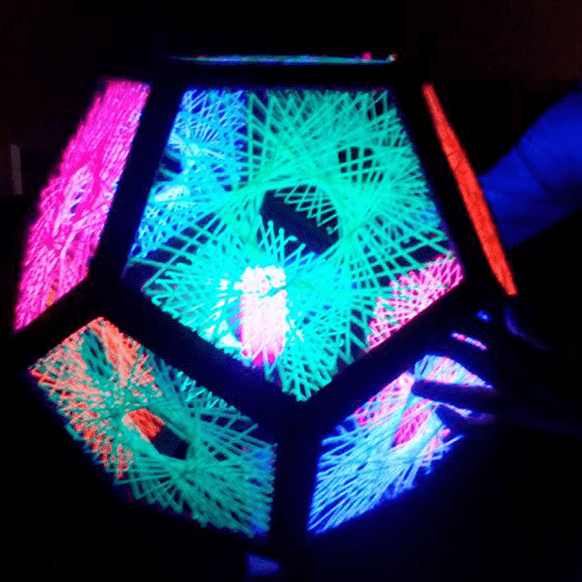

Biography
My name is Benjamin Mckeown I'm a designer and an amatuer coder, Ive always had a passion for computing and graphical interfaces and so love the concept of web design/development ,I have a basic understanding of html , css and other programming languages, i'm currently a student at the university of Northampton,
which is studying BSC Computing, to enhance my existing knowledge on computers as a whole.
Within my free time, I like to do such hobbies as football, gaming and graphical design, but when it comes down to my favourite activity to do,
it would be to spend time on the web through websites like social media or video media websites such as youtube.
Overall I’m excited for the next few years of my life studying at the university of northampton and can't wait for experiences and events to begin both academically and socially.
-
-

-

-

-
-